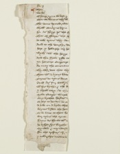
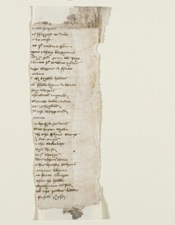

Devon Record Office, MS Deposit 2507 ()
For y . . .
¶than . . .
we be . . .
4Of long tyme be-left & . . .
That we done is thy de?. . .
The dome demed was . . .
Shałł souerayne hym . . .
8For as Ferre ys the F. . .
That of Flayes the F. . .
be-take tytus thy son . . .
And to the doughty du. . .
12here y hold vp my ho. . .
wytħ ałł the herre . . .
And thu shalt ryde to . . .
yn honoure Emperoure . . .
16So may the Couenant . . .
Thy-self dose that thy . . .
Than witha lyons late . . .
Turnes to tytus ano? . . .
20And as sir sabbyn . . .
withhis brother & the ?. . .
y shałł tary at this . . .
Made wayes thurw . . .
24Oure brother hestes . . .
Or here to-hewen be o? . . .
A boke on a brode she?. . .
bernes byden the hon. . .
28To be leue to that lo. . .
Sur tytus the trewe . . .
Fayne as Foule witht. . .
he kyssed his knyghtes. . .
32My wele & my worsh. . .
For the tresoure of ?. . .
. . . tho g???? thougħt
36. . . wo happen
. . . ?s Fayrest to dele
. . .s to cast
. . . to þetowne graunt
40. . .yne thay begynne
. . .?d & god geue vs Ioye
. . .boute þetowne rydes
. . .?iege segges a Fewe
44. . . Caue
. . .ł of brygħt hedes
. . .? Felle hym a-boute
. . .?ay weren
48. . . he wałł myned
. . . withoute tale more
. . . was Thrylled
. . . withthe sharp end
52. . .?onne
. . .de brusyd to detħ
. . . withso herter wylle
. . . of the Flynt stonys
56. . .? at-onys
. . .? the stede laft
. . . dyn herd
. . . viijCsperys
60. . .ldes them sone
. . .s his brother holpen
. . . turnes blyue
. . .?e forto stoppe
64. . . that he hadde
. . . wythynne Closed
. . .?łł the Iewes ladde
. . . forsoke þeprofer